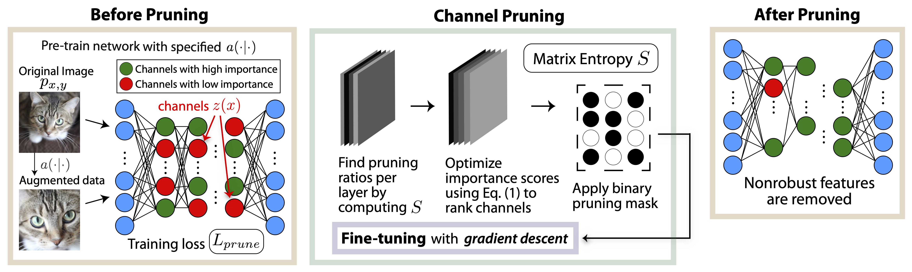

Why layer-wise views help us understand Deep Models
Instead of treating a model as a black box transformation, we examine the system in stages to be compared and tuned e.g. How information moves through a network, and by how much at each stage.
This perspective helps us improve performance while maintaining both interpretability and abstraction. Our work then reduces to finding the balance between the two, informed by the correct measurement of the correct matrix division (per-{layer, channel, weight}).
Temperature high: ↓ Overfitting
- ↓ iterations
- ↓ batch size (amount of overall update)
- ↓ learning rigot and aggression
- ↑ LR
- ↑ noise
Load high (small α)
- Trained well, learned much information
Postmortem
The remainder of this research was carried out and eventually published by latest additions of a rebuilt team following my departure. I credit the origins of this body of work to my talented senior researches and collaborators.
